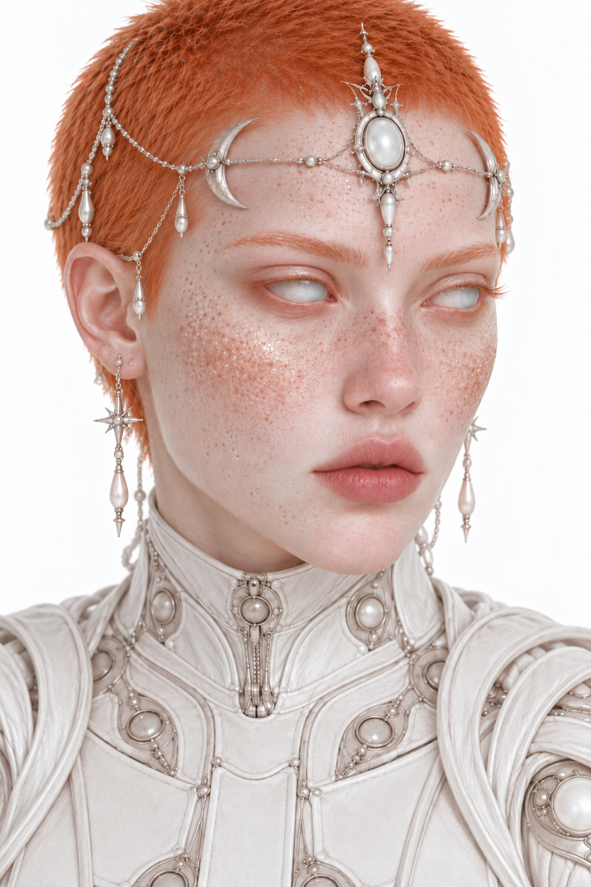

Chi sono

Non è semplice raccontare chi sono, soprattutto quando una parte di ciò che porto dentro non sembra appartenere al mondo che conosco.
Da anni convivo con immagini estremamente precise, ricordi apparenti e sogni che sembrano avere una memoria propria.
Alcuni sogni riprendono da dove sembravano essersi interrotti, seguendo una continuità che attraversa gli anni. Ci sono luoghi, presenze, avvenimenti e intere esistenze che mi appaiono familiari, pur non appartenendo alla mia vita quotidiana. E non tutti questi luoghi sono sulla Terra.
Aelys è il volto che ho scelto per rappresentare questa parte della mia interiorità. Un'immagine attraverso cui dare forma a qualcosa che, per molto tempo, non ha avuto parole.
Osservo il mondo, le persone, le loro contraddizioni. Mi interessano le fragilità umane, le cose che vengono nascoste, le domande senza risposte e quella bellezza imperfetta che spesso passa inosservata.
La bellezza delle crepe nasce dal desiderio di scrivere tutto questo.
Scrivo per lasciare una traccia di ciò che penso, vivo, sogno e ricordo.
Anche quando non so ancora quale nome dare a tutto questo.
Aelys